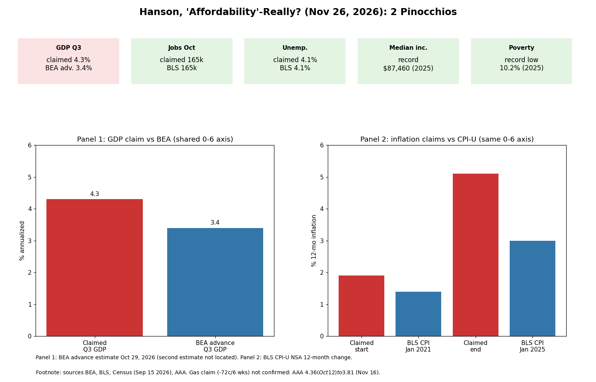

The jobs, unemployment, income and poverty claims are accurate. The Q3 GDP figure (4.3%) does not match BEA's advance estimate of 3.4% annualized. The inflation endpoints (1.9% and 5.1%) do not match BLS CPI-U 12-month changes (1.4% in Jan 2021, 3.0% in Jan 2025). The gas claim (72 cents in six weeks) could not be confirmed.
| Claim | Verdict | Evidence | Confidence |
|---|---|---|---|
| Q3 GDP growth 4.3% | Not supported | BEA advance: 3.4% annualized (Oct 29) | Medium-high; second estimate not found |
| 165,000 jobs in October | True | BLS Nov 6 release | High |
| Unemployment 4.1% | True | BLS (4.2% in Sept) | High |
| Record median household income | True | Census: $87,460 real, 2025, highest since 1967 | High |
| Lowest poverty rate on record | Largely true | Census official rate 10.2%, child poverty record low 13.4%; reports call it a record low | Medium |
| Gas down 72 cents in six weeks | Not confirmed | AAA $4.36 (Oct 12), $3.91 (Nov 12), $3.81 (Nov 16): about 55 cents in 5 weeks | Low-medium |
| Inflation 1.9% at Biden start, 5.1% at exit | Does not match CPI | CPI-U 12-mo: 1.4% (Jan 2021), 3.0% (Jan 2025) | Medium; the author's measure is unstated |
| Cumulative prices +21.4% (Biden) vs +7.7% (Trump I) | Consistent with CPI-U index | Jan-to-Jan CPI-U index levels, recalled not re-fetched | Medium |
| 9.1% peak, highest since 1981 | True | BLS CPI June 2022 | High (recalled) |
| Democrats "gearing up for impeachments and subpoenas" | Opinion; partly supported | Axios and others report subpoena plans; Jeffries says the focus is affordability | Medium |